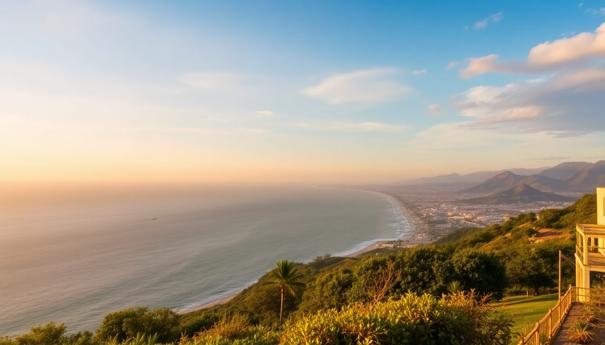

Best Beaches in Peru: Lima, Mancora & Paracas Guide

I spent three weeks driving the Pan-American Highway from Lima up to the Ecuador border, then down to Paracas, towel and sunscreen always within reach. Peru’s coastline is 1,500 miles long—but the beaches worth your time cluster around three hubs. Here’s where I actually got in the water, what I ate, and which spots I’d skip next time.
What makes Lima’s coastline worth visiting?
Lima sits on cliffs above the Pacific, so its “beaches” are really coves and rocky strips below the city. The water is cold—think 60°F year-round—but on a sunny winter day (June–October), the grey skies break and the whole city heads down to the coast.
I spent a morning at Playa Redondo in Miraflores. It’s the most accessible beach: stairs lead down from the Malecón de Miraflores boardwalk, and there’s a line of cevicherías right on the sand. The waves are strong—not great for swimming, but fine for wading. The real draw is the Larcomar shopping center perched on the cliff above, where you can grab a Pisco sour at Mangos and watch paragliders drift past.
- Playa Barranco (Barranco district) — quieter, fewer tourists, good for sunset photos with the old pier
- Playa Makaha — popular with local surfers; beginner-friendly waves if you rent a board from Makaha Surf Club
- Playa La Herradura (south of Miraflores) — calmer water, better for actual swimming, but the sand is darker and rockier
- Cevichería La Mar in Miraflores — not beachfront but the best ceviche I had in Lima; order the ceviche clásico with a Chicha Morada
If you’re just in Lima for a day, hit Playa Redondo or Barranco. If you want to surf, drive 20 minutes south to Playa Punta Rocas—consistent waves, fewer crowds, and a proper surf camp vibe.
Is Mancora worth the long bus ride from Lima?
Yes—if you want warm water, sun, and a party scene. Mancora is a 16-hour bus north of Lima (or a 1.5-hour flight to Talara airport, then a 45-minute taxi). The water sits around 75–80°F, the sand is golden, and the palm trees actually look like a postcard.
I stayed at Mancora Beach Bungalows—basic rooms but right on the sand, and the owner helped me arrange a surf lesson with Mancora Surf School for $25 including board rental. The main beach, Playa Mancora, is wide and swimmable, but gets packed with backpackers playing volleyball and selling chicha from coolers.
- Playa Pocitas (10-minute tuk-tuk south) — calmer, fewer people, better for swimming; I saw sea turtles here
- Playa Vichayito (20 minutes south) — my favorite. Long empty stretches, perfect for a quiet afternoon. Vichayito Bungalows has a pool and restaurant that serves arroz con mariscos that rivals Lima’s best
- Restaurant La Sirena d’Juan — on the main strip in Mancora; the ceviche mixto was loaded with octopus and calamari
- Kantu Beach Hostel — if you’re on a budget, the hammocks on their terrace face the sunset directly
Mancora is loud on weekends—thumping reggaeton until 2 AM. If you want quiet, stay in Vichayito or Los Órganos (15 minutes north), a fishing village with almost no nightlife but incredible fresh ceviche de conchas negras.
What does Paracas offer that Lima and Mancora don’t?
Paracas is desert meets ocean—red cliffs, black sand, and turquoise water that looks Caribbean on a clear day. It’s three hours south of Lima by bus, and the main draw is Paracas National Reserve, where the beaches are wild and undeveloped.
I rented a bike from Paracas Explorer ($10 for half a day) and rode into the reserve. The first beach you hit is Playa Roja—the sand is purple-red from mineral deposits, and the water is shockingly clear. No facilities, no shade, just wind and silence. Further in, Playa Yumaque has calmer water and a small cove where I saw flamingos wading in the shallows.
- Playa La Mina (inside the reserve) — the best swimming beach in Paracas. Calm, warm-ish water, and a tiny restaurant selling chilcano de pescado for $4
- Ballestas Islands — not a beach, but every Paracas visitor does this boat tour. You’ll see sea lions, penguins, and the Candelabra geoglyph. Book with Paracas Ballestas Tours at the dock; $25 per person, 2 hours
- Hotel Paracas, a Luxury Collection Resort — I didn’t stay here (too pricey), but I used their pool and bar for sunset. Worth it for one cocktail
- Restaurant Pukasoncco in town — the lomo saltado was the best I had in Peru; ask for the aji amarillo sauce on the side
Paracas is windy—like, hold-onto-your-hat windy from noon to sunset. Go early morning for calm water and empty beaches. And bring a hoodie; the desert cools fast once the sun drops.
When is the best time to visit Peru’s beaches?
It depends on which coast you’re targeting. The north and south have opposite seasons.
- Mancora and the Northern Beaches (Piura region): best from December to April. That’s their summer—sunny, 85°F, no rain. May to November is overcast and cooler (75°F), but still swimmable and way less crowded
- Lima beaches: best from January to March (Peruvian summer). The water warms to 65°F, and the sun actually comes out. June to October is “winter”—grey skies, drizzle called garúa, but the surf is best then
- Paracas: best from October to April. May to September is windy season; the reserve can feel like a sandblaster. Water is clearest in February and March
I hit Mancora in February—perfect. Paracas in July was windy but the water was still warm-ish. Lima in August was grey but the ceviche was just as good.
What are the best day trips from these beach hubs?
Each city has a nearby attraction that’s worth a half-day detour.
From Lima, I drove 45 minutes south to Punta Negra—a quiet fishing town with a long pier and cevicherías on the sand. El Faro restaurant there makes a tiradito de lenguado that’s as good as any in Miraflores. Another option: Pachacamac ruins (30 minutes south), an archaeological site right on the coast—you can see the Huaca del Sol from the beach.
From Mancora, take a tuk-tuk 20 minutes north to Los Órganos for the Isla Foca boat tour ($20, 3 hours). You’ll see sea lions, blue-footed boobies, and a lighthouse. Or head east 45 minutes to Petroglifos de Chocán—pre-Inca rock carvings in a dry canyon. I rented a scooter from Mancora Moto for $30/day.
From Paracas, the Ballestas Islands tour is the obvious one, but I also recommend the Reserva Nacional de Paracas sunset drive. Rent a car from Paracas Rent a Car ($40 for 4 hours) and drive to Playa Mendieta—a long empty beach where you’ll likely be alone. The road is dirt but fine for a sedan.
FAQ
Is it safe to swim at Lima’s beaches? Generally yes, but check the water quality flags. Playa Redondo and Playa Barranco are monitored and clean most of the year. Avoid swimming after heavy rain (rare in Lima) and never swim near the rocky cliffs where rip currents form. I swam at Playa Makaha without issues—just watch for surfers.
Do I need a wetsuit for Mancora? No. The water is 75–80°F from December to April. I swam without one comfortably. If you surf, a shorty wetsuit helps in the cooler months (May–November) when the water drops to 68°F. Most surf schools in Mancora rent them for $5 extra.
Can I visit Paracas and the Ballestas Islands in one day from Lima? Yes, but it’s a long day. Buses from Lima to Paracas run every hour (Cruz del Sur, $12, 3 hours). Take the 6 AM bus, arrive by 9 AM, do the 10 AM Ballestas tour (2 hours), grab lunch at Pukasoncco, then hike to Playa Roja before the 5 PM bus back. I did it—worth it, but I’d rather spend one night at Hotel Paracas to avoid the rush.
Conclusion
- Lima’s beaches are best for cliffside ceviche, paraglider views, and a quick urban escape—hit Playa Redondo or Barranco, but don’t expect tropical water
- Mancora delivers warm surf and party vibes; stay in Vichayito for quiet, and book a surf lesson at Mancora Surf School
- Paracas offers desert-meets-ocean scenery—Playa La Mina and the Ballestas Islands are non-negotiable
- Timing matters: north coast in summer (Dec–Apr), Lima in summer (Jan–Mar), Paracas in shoulder season (Oct–Apr)
- Rent a bike or scooter in Paracas and Mancora—the best beaches are the ones you have to work to reach